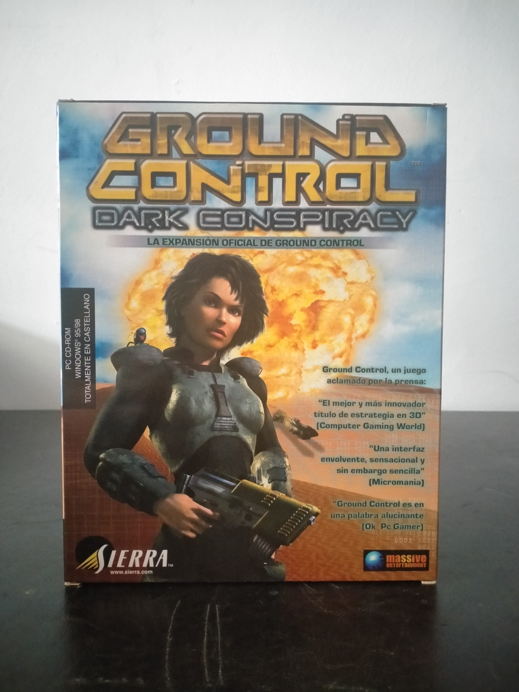

Ficha #000124
Ground Control: Dark Conspiracy
Ground Control: Dark Conspiracy es la expansión oficial de Ground Control, el influyente título táctico en 3D de Massive Entertainment publicado por Sierra a comienzos de los años 2000. Continúa la historia tras el final del juego original y vuelve a situar a la Mayor Sarah Parker en Krig-7B, esta vez obligada a colaborar con una nueva facción mercenaria para sobrevivir y descubrir una amenaza tecnológica de gran alcance. La expansión añade una campaña de 15 misiones repartidas en tres planetas, la facción de los Mercenarios Fénix, nuevas unidades para la Crayven Corporation y la Orden del Nuevo Amanecer, terrenos adicionales y mapas multijugador. Su interés histórico reside en ampliar una propuesta que se alejaba del RTS tradicional de recolección y construcción de bases para centrarse en posicionamiento, cobertura, composición de escuadras y uso táctico del relieve en escenarios 3D. Esta edición española en caja grande para PC CD-ROM está totalmente en castellano, fue distribuida por Havas Interactive España y requiere Ground Control para jugar.
- Formato
- Big Box
- Plataforma
- Win95 Win98
- Género
- Táctica en tiempo real Estrategia en tiempo real Ciencia ficción Expansión
- Serie
- Todos Big Box
- Desarrollador
- Massive Entertainment, High Voltage Software
- Distribuidor
- Sierra Studios, Havas Interactive España
- EAN
- —
Contenido de la edición
- Caja Big Box
- CD-ROM en caja jewel case
- Tarjeta postal o de registro de Havas Interactive España
Preservación
- Protección
- No determinado
- Formato recomendado
- BIN/CUE
- Jugable en virtualización
- Sí
Preservación recomendada mediante imagen completa del CD-ROM original en BIN/CUE o ISO, documentando caja, carátula y tarjeta de registro. Al ser una expansión, la ejecución virtual requiere una instalación funcional de Ground Control y debe verificarse si la edición realiza comprobación de disco durante instalación o arranque.